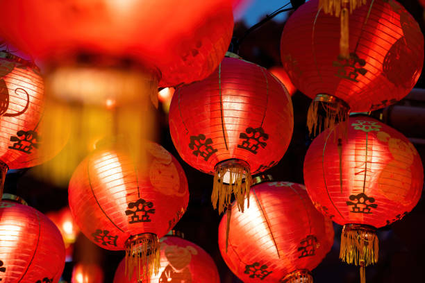
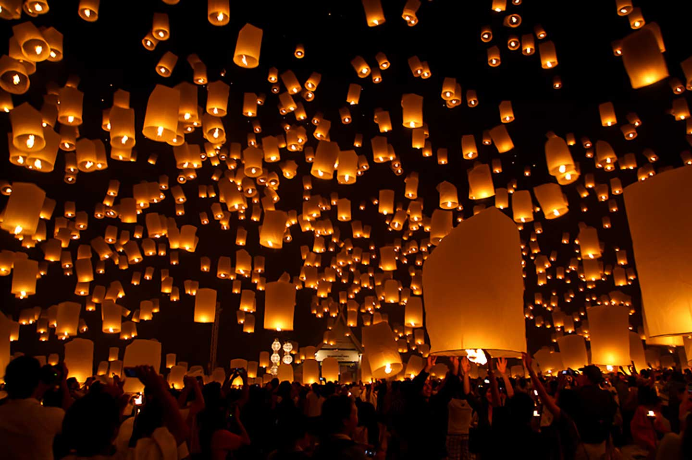
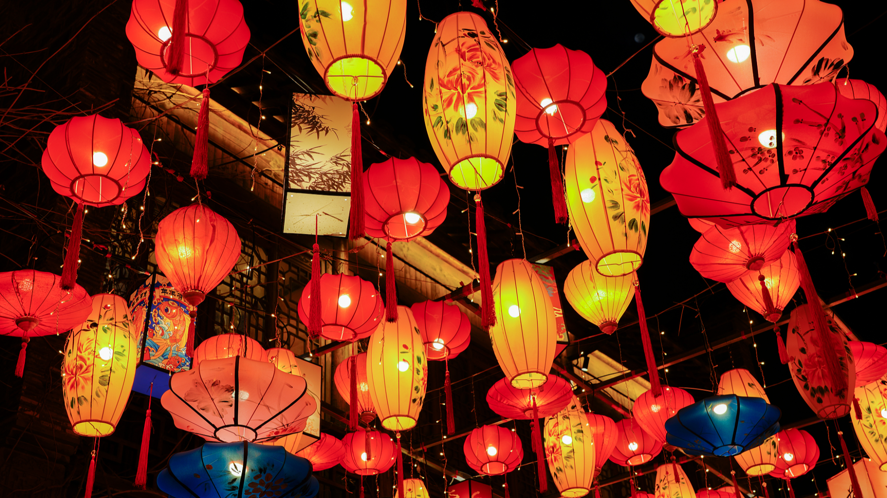

¿Qué es el Festival de las Linternas?
El Festival de las Linternas es una de las celebraciones más hermosas de China y marca el cierre oficial de las festividades del Año Nuevo Chino.
Durante esta noche especial las ciudades se iluminan con faroles de colores, espectáculos tradicionales y reuniones familiares llenas de simbolismo cultural.
Origen e Historia
Esta festividad tiene más de dos mil años de historia. Se originó durante la dinastía Han y con el tiempo se convirtió en una tradición nacional relacionada con la prosperidad, la esperanza y la buena fortuna.
Tradiciones Principales
- Encender faroles rojos tradicionales
- Resolver acertijos escritos en linternas
- Realizar danzas del dragón y el león
- Disfrutar reuniones familiares
- Comer tangyuan (bolas de arroz dulce)
Galería del Festival


